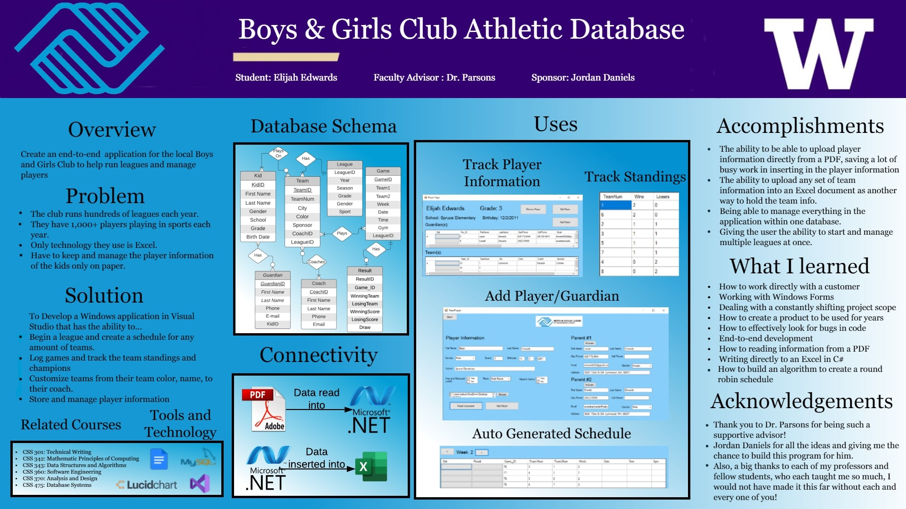

Division of Computing & Software Systems
March 19, 2021
Elijah Edwards
Boys & Girls Club Athletic Database
Individual Project-Student Defined
Advisor: Dr. Erika Parsons
Abstract

View full-sized poster